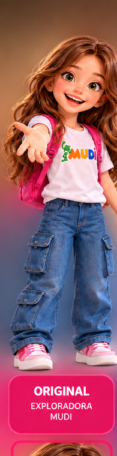
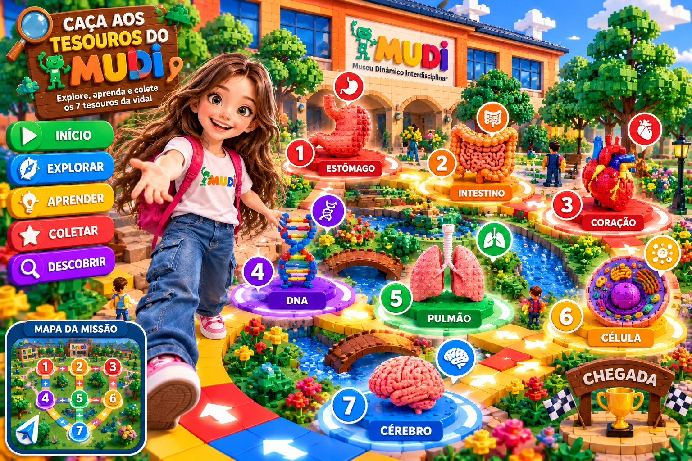

🧭 MAYA — CAÇA AOS TESOUROS DO MUDI
Maya é sua única exploradora! Aponte a câmera para o QR Code e veja o tesouro flutuar no ambiente.

Encontre os QR Codes escondidos no museu. Quando a câmera reconhecer um deles, o objeto aparecerá flutuando no ambiente!

🗺️ Tesouros encontrados no mapa
Os objetos flutuam sobre a imagem da câmera após a leitura do QR Code e são revelados nos dois mapas depois da coleta. A câmera sobrepõe o objeto à imagem, sem rastreamento espacial 3D. Mapa artístico, não geolocalização real. A coleção fica salva neste aparelho. Para usar a câmera, publique em HTTPS (por exemplo, GitHub Pages); alguns navegadores não oferecem leitura nativa de QR. A opção de inserir o código funciona sem câmera. Para uso offline, abra uma vez o PWA pela internet e permita que os arquivos sejam armazenados.